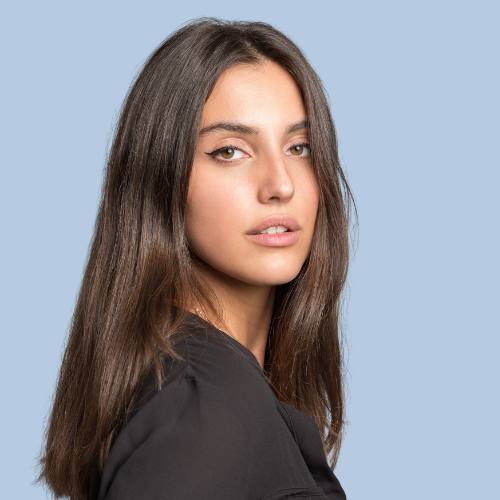
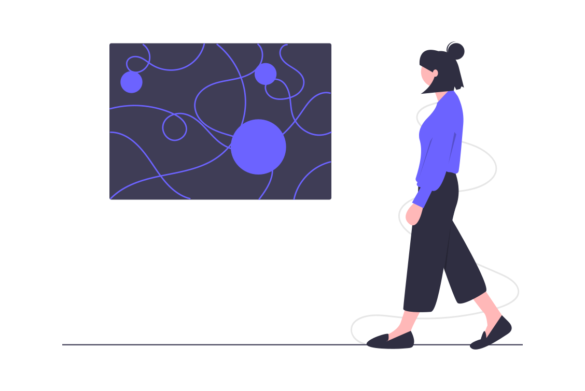

Hi, I'm Emma 🙋
Découvrez mon parcours de vie 💗
"Je suis actuellement en alternance en tant que cheffe de projet dynamique participative chez Harmonie Mutuelle et en mastère spécialisé digital marketing et data analyse à Kedge "
Mon profil LinkedIn👇Découvrez mes passions & experiences marquantes !👇
Ma passion : le digital 💻
Au travers de mes différentes experiences, j'ai des compétences dans la création visuelle, le parcours utilisateur (refonte de plateforme - maquette et verbatim). J'utilise différents outils et souhaite progresser en CSS, HTML et montage vidéo. Je co-pilote chez Harmonie Mutuelle le projet de développement d'une plateforme d'engagement.

Découverte des dynamiques collaboratives 💡
Dans le cadre de missions transverses, je participe depuis 3 ans à concevoir des formations, séminaires ou ateliers (en présentiel ou distanciel) à partir de méthodes dîtes d'intelligence collective comme le desigh thinking
Découvrez plus sur l'intelligence collective
Mes hobbies 🩰
Je suis fan de l'art. J'ai pratiqué la danse moderne et classique en semi-professionelle, du théâtre, du chant, du solfège, du piano ...
Ma citation préférée :
« L’art c’est la plus sublime mission de l’homme, puisque c’est l’exercice de la pensée qui cherche à comprendre le monde et à le faire comprendre »
Auguste Rodin
